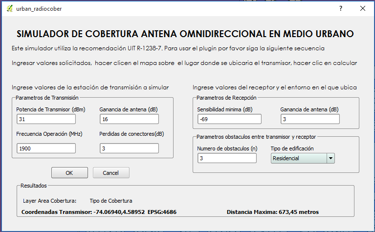
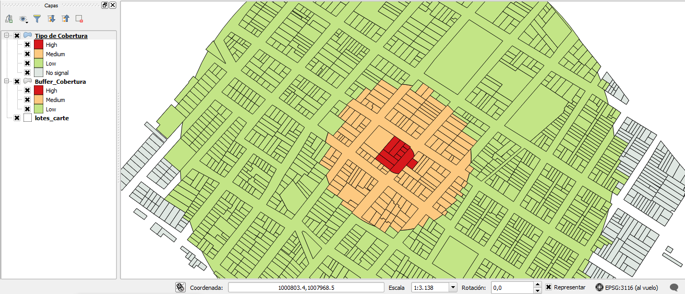
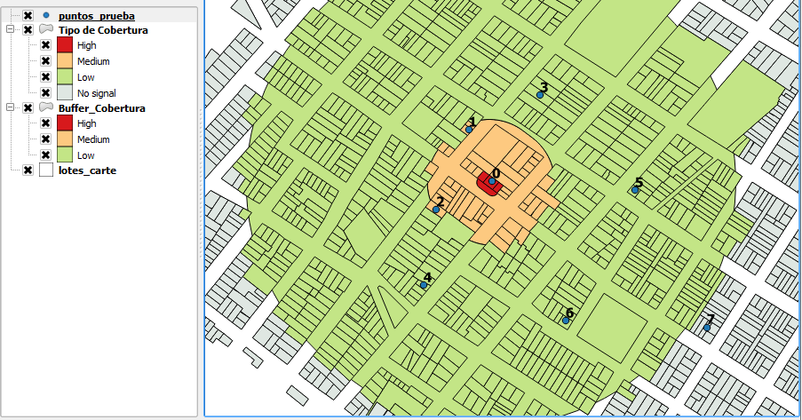

QGIS URBAN RADIOCOBER
Help Guide
Any issues not answered in this guide should be logged at:
https://github.com/dlcifuentesl/UrbanRadioCober/issues
Why are my buffers square?
This is an issue with feature simplification in QGIS.
Turn off feature simplification:
Settings>Options>Rendering>Untick "Enable feature simplification by default"
Try the buffer again.
Input Data
You must fill each field
Transmission Parameters
Reception parameters
Parameters obstacles between transmitter and receiver

QGIS Cover Simulation
Simulation output layer QGIS coverage

Simulation test points
